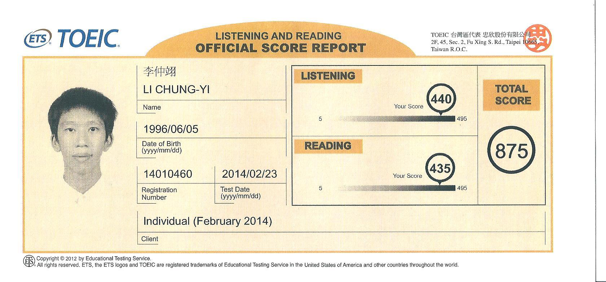

李仲翊(Zhong-Yi Li)
程式語言
- C++(一年半)
- R(半年)
學經歷
- 國立台灣師大附中, 2011-2014
- 國立台灣大學電機工程學系, 2014-2018
英語能力檢定
| 檢定名稱 | 成績 | 證明 | |
|---|---|---|---|
| TOEIC | 875/990 |  | |
| 全民英檢 | 中高級通過 |  |
| 課程名稱 | 課程資訊 | Github repository | 內容 |
|---|---|---|---|
| 計算機程式 | https://goo.gl/V54WkT | 基礎C++語法 | |
| 計算機概論 | https://goo.gl/olkbKo | ||
| 資料結構與程式設計 | https://goo.gl/ogkJYM | https://goo.gl/PbJFu7 | |
| 語言分析與資料科學 | https://goo.gl/eDCvf1 | https://goo.gl/iEEYIk | Text analysis |